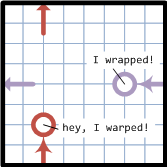
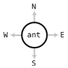

Ants Problem Description
Ants is a multi-player strategy game set on a plot of dirt with water for obstacles and food that randomly drops. Each player has one or more hills where ants will spawn. The objective is for players to seek and destroy the most enemy ant hills while defending their own hills. Players must also gather food to spawn more ants, however, if all of a player's hills are destroyed they can't spawn any more ants.
The objective is to create a computer program (a bot) that plays the game of Ants as intelligently as possible. It is recommended that you use one of the starter packages as a starting point. If you are looking to get up and running as quickly as possible, check out the Five Minute Quickstart Guide. For more details about Ants beyond this introductory document, see the Game Specification.
 The game is turn-based. The map is a grid of squares that wraps around at the edges (a torus). This means if an ant walks up across the top of the map they appear at the bottom, or walking to the right they appear at the left. A bot is a program that reads input about the squares it can currently see and outputs orders to move its ants around the map.
 Each ant can only see the area around it, so bots will not start with a full view of the map. Each turn the bot will be given the following information for all squares that are visible to its ants:
- a list of water squares, that have not been seen before
- a list of ants, including the owner
- a list of food
- a list of hills, including the owner
- a list of dead ants (from the last attack phase), including the owner
A bot can issue up to one order for each ant during a turn. Each order specifies an ant by location and the direction to move it: North, South, East or West. Once the order is executed, ants move one square in the given direction.
The game then goes through 5 phases:
- move all ants (ants that collide in the same square are killed)
- attack enemy ants if within range
- raze ant hills with enemy ants positioned on them
- spawn more ants at hills that are not razed or blocked
- gather food next to ants (food disappears if 2 enemies are both next to it)
After the phases, the bot will receive the next game state and issue more moves.
Sometimes bots crash or timeout (don't let your bot do this!) and are removed from the game. The ants will just stay where they are and must still be attacked and killed to get their territory. It's good to control most of the map, because then the bot will be able to gather more food to create more ants giving it a better chance to raze enemy ant hills while defending its own, which is how to get the highest score and win!
The game ends when only one active player has ants, or only one player's ant hills remain, or if the game goes past a certain number of turns. (The game can also be cut short if no progress is being made by any bot, or if the rank of bots will not change. The game will continue if the only bot with a hill isn't winning yet. See our cutoff rules.)
Want to know how to program a bot? First read the detailed Game Specification, and then check out the Five Minute Quickstart Guide!

 Validating...
Validating...